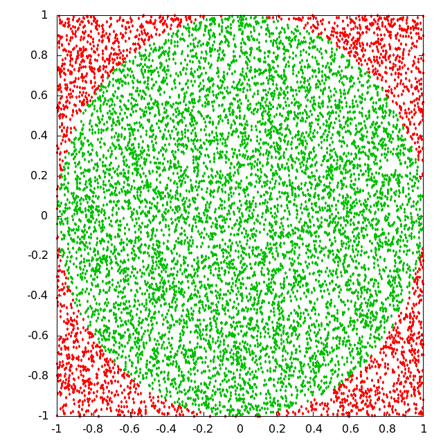

Computer Lab - Semester 1¶
Programs¶
Sum and average of a list of numbers¶
Here, I like to demonstrate how a list of numbers can be prepared with the help of random function. This function is available in python and NumPy package. One can use any one of them.
Next, I shall demonstrate sum of numebrs can be done by writing a simple code from scratch or one can take the help of sum function which is available in python..
After that average of the numbers can be obtained.
[15]:
import numpy as np
a = np.random.randint(100, size=10);a
[15]:
array([41, 33, 15, 29, 35, 91, 83, 12, 6, 90])
[18]:
# Sum and average from scratch
Sum = 0
for i in range(len(a)):
Sum += a[i]
print('Sum = %d'%Sum)
avg = Sum/len(a) # average calculation
print('Average = %d'%avg)
Sum = 435
Average = 43
[21]:
# sum and average using function
s = sum(a)
print("Sum = %d"%s)
avg1 = s/len(a)
print('Average = %d'%avg)
Sum = 435
Average = 43
Largest of a given list of numbers and its location in the list¶
[27]:
max = a[0] # Initialisation
# Loop to check each element in the list
for i in range(len(a)):
if a[i] > max:
max = a[i]
else:
max = max
# Displaying the result
print("Maximum number in the list = ",max)
# Finding the index position
for i in range(len(a)):
if a[i] == max:
print("Index position of maximum value in the list is " +str(i))
break
Maximum number in the list = 91
Index position of maximum value in the list is 5
Sorting of numbers in ascending descending order¶
Bubble sorting will be implemented. It is a sorting algorithm which repeatedly swaps adjacent elements if they are in wrong order.
[30]:
n = len(a)
# scan across the list
for i in range(n-1):
# compare two adjacent elements
# swap if the element found is smaller than the previous one
for j in range(n-i-1):
if a[j+1]<a[j]:
a[j], a[j+1] = a[j+1], a[j]
print("The sorted list is \n",a)
The sorted list is
[ 6 12 15 29 33 35 41 83 90 91]
Binary search¶
[31]:
def binarySearch(arr_list, start, last, item):
if start <= last:
mid = (start + last)//2
if item == arr_list[mid]:
return mid
elif item < arr_list[mid]:
last = mid - 1
return binarySearch(arr_list, start, last, item)
else:
start = mid + 1
return binarySearch(arr_list, start, last, item)
return -1
a = [78.0, 45.0, 98.0, 23.0, 55.0]
arr_list = a
start = 0
last = len(a) - 1
item = 98
result = binarySearch(arr_list, start, last, item)
if result == -1:
print('The element '+str(item)+' is NOT in the '+str(arr_list))
else:
print('The element '+str(item)+' is in the '+str(arr_list)+' at the index position '+str(result))
The element 98 is in the [78.0, 45.0, 98.0, 23.0, 55.0] at the index position 2
Random number generation¶
To determine the value of \(\pi\)¶
Consider a circle inscribed inside a square of side \(2r\). Now, if we divide the area of the circle by the area of the square, we find
\begin{align} \frac{\text{Area of circle}}{\text{area of square}}=\frac{\pi r^2}{(2r)^2}=\frac{\pi}{4} \end{align}
i.e. the value of \(\pi\) is four times the ratio of the area of the circle to the area of the square.
If we populate the area densely with points, then the individual area will be proportional to the number of points within the boundary.
Therefore, numerically approximate value of \(\pi\) is represented as
\begin{align} \pi = 4\left( \frac{\text{Number of points within the circle}}{\text{Total number of points within the square}}\right) \end{align}
Imagine that the square extends from -1 to 1 both along X and Y axes and center of the circle coincides with the origin of the coordinate axes. A point is represented by a x and y coordinates. So, first of all generate \((x,y)\) corodinates within a range from -1 to 1 randomly through the following code.

[32]:
import numpy as np
# Generate coordinate points
N = 1000 # N represents the number of coordinate points
points = np.random.uniform(-1, 1, size=(N,2))
x, y = points[:, 0], points[:, 1]
# Count the points within circle
points_in = 0
for i in range(N):
if x[i]**2 + y[i]**2 <= 1:
points_in += 1
# The value of pi
pi = 4*(points_in/N)
print("The value of pi is ",pi)
The value of pi is 3.112
Solution of Algebraic and Transcendental equations by Bisection, Newton Raphson and Secant methods¶
Algebric Equations¶
Quadratic Equations¶
A quadratic equation is represented by \begin{align} ax^2 + bx + c = 0 \end{align}
and its solution is given by
\begin{align} x = \frac{-b \pm \sqrt{b^2 - 4ac}}{2a} \end{align}
We may find three different types of solutions depending on the values of \(a\), \(b\) and \(c\).
\begin{align} \text{roots}(r1,r2)= \begin{cases} \text{two real roots} & \text{if}~~ \sqrt{b^2 - 4ac}>0\\ \text{real equal roots} & \text{if}~~\sqrt{b^2 -4ac}=0 \\ \text{two complex roots} & \text{if}~~\sqrt{b^2 - 4ac}<0 \end{cases} \end{align}
We may write following piece of code to find the roots of a quadratic equation and to ascertain the nature of the roots.
[37]:
a, b, c = 1, -1, 1
d_square = b**2 - 4*a*c
root_type=["equal", "real", "complex"]
pm = np.array([1, -1])
if d_square == 0:
r = -b/(2*a)
print(root_type[0], r)
elif d_square > 0:
r1, r2 = (-b + pm*sqrt(d_square))/(2*a)
print("Roots are "+str(root_type[1])+"\n and the values are "+str([r1, r2]))
else:
r1, r2 = (-b + pm*sqrt(d_square))/(2*a)
print("Roots are "+str(root_type[2])+"\n and the values are "+str([r1, r2]))
Roots are complex
and the values are [(0.5+0.8660254037844386j), (0.5-0.8660254037844386j)]
Simultaneous Linear Equations¶
A set of \(n\) simultaneous linear equations with \(n\) unknown variables can be represented as \begin{equation} \begin{aligned} a_{11}x_1 + a_{12}x_2 + \cdots + a_{1n}x_n = b_1, \\ a_{21}x_1 + a_{22}x_2 + \cdots + a_{2n}x_n = b_2, \\ \vdots \hspace{2cm} \vdots \\ a_{n1}x_1 + a_{n2}x_2 + \cdots + a_{nn}x_n = b_n, \end{aligned} \end{equation} In matrix notation, we can write the set of equations as \begin{align} &\underbrace{\begin{pmatrix} a_{11} & a_{12} & \cdots & a_{1n} \\ a_{21} & a_{22} & \cdots & a_{2n} \\ \vdots & \vdots & \vdots & \vdots \\ a_{n1} & a_{n2} & \cdots & a_{nn} \end{pmatrix}}_{{A}} \underbrace{\begin{pmatrix} x_1 \\ x_2 \\ \vdots \\ x_n \end{pmatrix}}_{{X}}= \underbrace{\begin{pmatrix} b_1 \\ b_2 \\ \vdots \\ b_n \end{pmatrix}}_{{b}}\\ &\textbf{AX=b} \end{align}
Multiplying both sides of the equaion with \(A^{-1}\) we get
\begin{align} A^{-1}AX = A^{-1}b \implies X = A^{-1}b \end{align}
so, multiplying coefficient matrix \(b\) with inverse of the matrix \(A\), we can obtain the solution matrix \(X\).
We can demonstrate with an example.
Solve the following set of linear equations. \begin{align} x + 2y + z = 7\\ 2x-2y - z = 5 \\ x + 4y -3z = 6 \end{align}
[38]:
import numpy as np
a = np.array([[1, 2, 1], [2, -2, -1], [1, 4, -3] ])
b = np.array([7, 5, 6])
a_inv = np.linalg.inv(a)
x = np.matmul(a_inv,b)
print("the solution matrix: ",x)
the solution matrix: [4. 1.1 0.8]
Root finding - Bisection method¶
[40]:
import numpy as np
def rootBisection(f, a, b, tol):
fa, fb = f(a), f(b)
while abs(a-b)>tol:
n = 1
m = (a+b)/2
fm = f(m)
if np.sign(fa) == np.sign(fm):
a, fa = m, fm
else:
b, fb = m, fm
n += 1
return m
We now run the following code with a given function (\(f\)) whose root is to be evaluated using the function rootBisection(f, a, b, tol) within the interval (a, b) with a given tolerance value (tol).
[41]:
f = lambda x : np.exp(x) - 2
tol = 0.01
a, b = -2, 2
root = rootBisection(f, a, b, tol)
print("The root of the function is ",root)
The root of the function is 0.6953125
The following piece of code helps us to understand, how we do approach towards the root. If the code appears little complicated for beginners, then, one can igonore the code and concentrate on the graphics.
[42]:
import numpy as np
import matplotlib.pyplot as plt
f = lambda x:np.exp(x)-2
tol = 0.1
a, b = -2, 2
x = np.linspace(-2.1, 2.1, 1000)
plt.plot(x, f(x), color='cyan')
plt.axhline(0, ls=':', color='k')
plt.xticks([-2, -1, 0, 1, 2])
plt.xlabel(r"$x$", fontsize=16)
plt.ylabel(r"$f(x)$", fontsize=16)
# Find the root using "Bisection method" and visualize
fa, fb = f(a), f(b)
plt.plot(a, fa, 'ko')
plt.plot(b, fb, 'ko')
plt.text(a, fa+0.5, "a", ha='center', fontsize=16)
plt.text(b, fb+0.5, "b", ha='center', fontsize=16)
n =1
while (b-a) > tol:
m = (a+b)/2
fm = f(m)
plt.plot(m, fm, 'bo')
plt.text(m, fm-0.5, '$m_%d$'%n, ha = 'center')
n +=1
if np.sign(fa) == np.sign(fm):
a, fa = m, fm
else:
b, fb = m, fm
plt.plot(m, fm, 'r*')
plt.text(m, fm-0.5, '$m_{}$'+str(n), ha = 'center')
plt.annotate("Root approx. at "+str(m),xy=(m,fm), xytext=(-1, 2), arrowprops=dict(arrowstyle='->'))
[42]:
Text(-1, 2, 'Root approx. at 0.6875')
The original idea of the above graphics is due to Mark Johansson.
Root finding - Newton-Raphson method¶
[43]:
def rootNewtonRaphson(f, x0, tol):
x = sp.symbols('x')
f_prime = sp.diff(f, x)
f = sp.lambdify(x, f, 'numpy')
f_prime = sp.lambdify(x, f_prime, 'numpy')
while f(x0)> tol:
xnew = x0 - (f(x0)/f_prime(x0))
x0 = xnew
return x0
import sympy as sp
x = sp.symbols('x')
f = sp.exp(x) -2
x0 = 1.4
tol = 1e-4
root = rootNewtonRaphson(f, x0, tol)
print("Root = %0.3f"%root)
Root = 0.693
The following piece of code helps us to understand the real approach to locate the root. However, if the code appears difficult, one may ignore it for the time being, and concentrate on the graphics.
[44]:
import numpy as np
import matplotlib.pyplot as plt
import sympy as sp
x = sp.symbols('x')
f = sp.Function('f')
f = sp.exp(x) - 2
f_prime = sp.diff(f, x)
f = sp.lambdify(x, f, 'numpy')
f_prime = sp.lambdify(x, f_prime, 'numpy')
x = np.linspace(-1, 2.1, 1000)
xk = 2
tol = 0.01
plt.plot(x, f(x), ls='-', color='blue')
plt.axhline(0, ls=':', color='k')
n = 1
while f(xk)> tol:
plt.plot([xk, xk], [0, f(xk)], ls=':', color='gray')
plt.plot(xk, f(xk), marker='o', color='blue')
plt.text(xk, -0.5, "$x_{%d}$"%n)
xnew = xk - (f(xk)/f_prime(xk))
plt.plot([xk, xnew], [f(xk), 0], ls='-',color='gray')
xk = xnew
n += 1
plt.plot(xk, f(xk), marker='*', color='red')
plt.annotate("Root is found approx. at %0.3f"%xk, xy=(xk, f(xk)), xytext=(0, 3), arrowprops=dict(arrowstyle='->'))
[44]:
Text(0, 3, 'Root is found approx. at 0.693')
The original idea of the above graphics is due to Mark Johansson.
Practical Problems¶
I) \(\tan x = x\)¶
[7]:
import numpy as np
import sympy as sp
import matplotlib.pyplot as plt
def figure():
fig, ax = plt.subplots(figsize=(9, 7))
# set the x-spine
ax.spines['left'].set_position('zero')
# turn off the right spine/ticks
ax.spines['right'].set_color('none')
ax.yaxis.tick_left()
# set the y-spine
ax.spines['bottom'].set_position('zero')
# turn off the top spine/ticks
ax.spines['top'].set_color('none')
ax.xaxis.tick_bottom()
def rootNewtonRaphson(f, x0, tol):
x = sp.symbols('x')
f_prime = sp.diff(f, x)
f = sp.lambdify(x, f, 'numpy')
f_prime = sp.lambdify(x, f_prime, 'numpy')
while abs(f(x0))> tol:
xnew = x0 - (f(x0)/f_prime(x0))
x0 = xnew
return x0
x = sp.symbols('x')
f = sp.tan(x) - x
tol = 1e-4
figure()
x = np.arange(0, 4*np.pi, 4*np.pi/100)
plt.plot(x, np.tan(x), color='blue', label='$x=\\tan x$')
plt.plot(x, x, color='cyan', label='$x=x$')
for n in range(3, 9, 2):
x0 = (n*np.pi/2)*0.999
root = rootNewtonRaphson(f, x0, tol)
print("Root = %0.3f"%root)
print("Root (interms of pi/2) = %0.3f"%(root*2/np.pi))
plt.plot(root, np.tan(root), 'ro', markersize=5)
plt.plot(root, root, 'ro', markersize=5)
plt.plot([root, root], [0, root], ls=':', color='blue')
plt.text(root-0.8, root+0.1, ''+str(round((root/np.pi),2))+'$\pi$')
plt.xticks(np.arange(0, 4*np.pi+np.pi/2, np.pi/2), ('$0$', '$\\frac{\pi}{2}$', '$\pi$', '$3\\frac{\pi}{2}$', '$2\pi$', '$5\\frac{\pi}{2}$', '$3\pi$', '$7\\frac{\pi}{2}$', '$4\pi$'))
plt.legend()
plt.show()
Root = 4.493
Root (interms of pi/2) = 2.861
Root = 7.725
Root (interms of pi/2) = 4.918
Root = 10.904
Root (interms of pi/2) = 6.942
II) \(I = I_0\left[\frac{\sin\alpha}{\alpha}\right]^2\)¶
The above expression can be simplied as \begin{equation} \sin \alpha = \sqrt{m}\alpha \end{equation} where, $(I/I_0) =m $.
Consider, \(m=2\) and writing \(x\) inplace of \(\alpha\), we obtain \begin{equation} x = \sqrt{2}\sin x \end{equation}
[10]:
def f(x):
return x - np.sqrt(2)*np.sin(x)
def df(x):
return 1 - np.sqrt(2)*np.cos(x)
def NewtonRaphson(f, df, x, tol):
dx = f(x)/df(x)
iter = 0
while (abs(dx) >= tol):
x = x - dx
dx = f(x)/df(x)
iter += 1
return iter, x
x = np.linspace(0, np.pi, 1000)
fig, ax = plt.subplots()
ax.spines['bottom'].set_position('zero')
ax.spines['top'].set_position('zero')
ax.spines['left'].set_position('zero')
ax.spines['right'].set_position('zero')
ax.plot(x, np.sqrt(2)*np.sin(x), color='blue', label="$y = \sqrt{2}\sin(x)$")
ax.plot(x, x, color='red', label="$y=x$")
plt.xticks(np.arange(0, 3*np.pi/2, np.pi/2), ('$0$', '$\\frac{\pi}{2}$', '$\pi$'))
ax.legend(loc='upper right')
plt.axvline(x=np.pi/2, color='k', linestyle=":")
plt.show()
Ordinary Differential Equations¶
Solve the coupled first order differential equations \begin{align} &\frac{dx}{dt} = y + x - \frac{x^3}{3} \\ &\frac{dy}{dt} = -x \end{align}
for four initial conditions \(x(0) = 0\), \(y(0) = -1, -2, -3, -4\). Plot x vs y for each of the four initial conditions on the same screen for \(0 \le t \le 15\).
[11]:
import numpy as np
from scipy.integrate import odeint
import matplotlib.pyplot as plt
[20]:
t = np.linspace(0, 15, 100)
for y0 in range(-1, -5, -1):
x0
z0 = [x0, y0]
def model(z, t):
x, y = z
dx_dt = y + x - x**3/3
dy_dt = -x
dz_dt = np.array([dx_dt, dy_dt])
return dz_dt
sol = odeint(model, z0, t)
x, y = sol[:, 0], sol[:, 1]
plt.plot(x, y, label='y = '+str(y0))
plt.xlabel('x', fontsize=14)
plt.ylabel('y', fontsize=14)
plt.legend()
plt.grid()
plt.show()
The ordinary differential equation describing the motion of a pendulum is
The pendulum is released from rest at an angular displacement \(\alpha\), i.e. \(\theta(0) = \alpha\), \(\theta^{\prime}(0)=0\). Use the RK4 method to solve the equation for \(\alpha\) = 0.1, 0.5 and 1.0 and plot \(\theta\) as a function of time in the range \(0 \le t \le 8\pi\). Also, plot the analytic solution valid in the small \(\theta\) (\(\sin \theta \approx \theta\)).
The given equation is a second order differential equation. This, we have to break up into two first order differential equations. Consider, \begin{align} &\frac{d\theta}{dt} = \omega \\ &\frac{d\omega}{dt} = -\sin \theta \end{align} So, we can represent these two equations by a single equation such that \begin{align} \frac{d}{dt} \begin{bmatrix} \theta \\ \omega \end{bmatrix}= \begin{bmatrix} \omega \\ -\sin \theta \end{bmatrix} \end{align}
[45]:
t = np.linspace(0, 8*np.pi, 100)
dt = (t[-1] - t[0])/len(t)
z = np.zeros([len(t), 2]) # to store the values
# of theta and omega
def model(z, t):
theta, omega = z
dtheta_dt = omega
domega_dt = -np.sin(theta)
dz_dt = np.array([dtheta_dt, domega_dt])
return dz_dt
def rk4(z, t):
k1 = model(z, t)
k2 = model(z + k1*dt/2, t + dt/2)
k3 = model(z + k2*dt/2, t + dt/2)
k4 = model(z + k3*dt, t + dt)
z = z + (1/6)*(k1 +2*(k2 + k3) + k4)*dt
return z
for theta0 in [0.1, 0.5, 1.0]:
omega0 = 0
z[0] = [theta0, omega0] # initial state of oscillation
for i in range(len(t)-1):
z[i+1] = rk4(z[i], t[i])
theta, omega = z[:, 0], z[:, 1]
plt.plot(t, theta, label='$\\theta_0 = $'+str(theta0))
plt.legend(loc= 'upper right')
plt.xlabel('t', fontsize=14)
plt.ylabel('$\\theta(t)$', fontsize=14)
plt.show()
Solve the differential equation: \begin{align} x^2\frac{d^2y}{dx^2} - 4x(1+x)\frac{dy}{dx} + 2(1 + x)y = x^3 \end{align}
with the boundary conditions:
at \(x = 1\), \(y = (1/2) e^2\), \(dy/dx = - (3/2) e^2– 0.5\), in the range \(1\le x \le 3\). Plot \(y\) and \(\frac{dy}{dx}\) against \(x\) in the given range. Both should appear on the same graph.
Let us break up the given second order differential equation into two first order differential equations - \begin{align} &\frac{dy}{dx} = z \\ &\frac{dz}{dx} = \frac{4(1+x)}{x}z - \frac{2(1+x)}{x^2}y +x \end{align}
[77]:
x = np.linspace(1, 3, 100)
y0 = (1/2)*np.e**2
z0 = -(3/2)*np.e**2 - 0.5
u0 = [y0, z0]
def model(u, x):
y, z = u
dy_dx = z
dz_dx = 4*(1+x)*z/x - 2*(1+x)*y/x**2 + x
du_dx = np.array([dy_dx, dz_dx])
return du_dx
sol = odeint(model, u0, x)
y, z = sol[:, 0], sol[:, 1]
plt.plot(x, y, color='blue', label='$y$')
plt.plot(x, z, color='red', label='$\\frac{dy}{dx}$')
plt.legend()
plt.xlabel('x')
plt.ylabel("$y$ and $\\frac{dy}{dx}$")
plt.show()